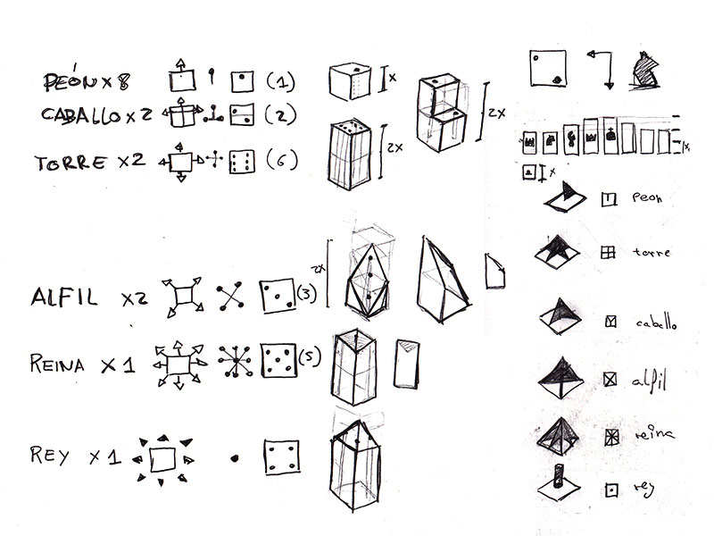
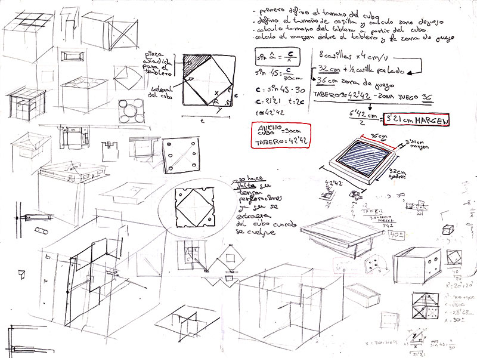
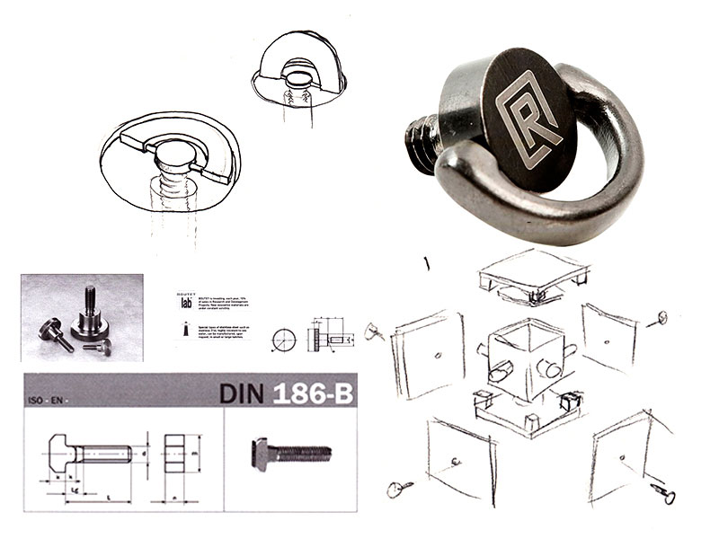

COMENCEMOS POR EL COMIENZO
Para entender correctamente este apartado y sus numerosos bocetos, deberíamos volver mucho más atrás y explicarlo desde el comienzo.
En los inicios del proyecto, planteé la idea de crear un hexaedro contenedor-expositor con 6 juegos en su interior (uno por cada lado del contenedor): ajedrez, damas, baraja inglesa, póker de dados, dados comunes y el Go. Todos y cada uno de estos juegos, llevan tras de sí una rigurosa investigación por lo que se dividieron en tres modalidades: Juegos de captura (Ajedrez, Damas, Go), Juegos de cartas (Baraja inglesa) Juegos de azar (Póker de dados y dados comunes).
Con un desarrollo avanzado se puso delante una evidencia, y es que el estudio de los juegos individualmente y el planteamiento de su contenedor, había hecho que me saliese de mi primera idea de ilusión. Esa transparencia y juego visual se había visto mermada por la cantidad de contenidos.Por lo que se procedió a simplificar el proyecto siguiendo algunos de los esquemas de la Bauhaus, característicos por sus diseños geométricos con formas simples y estudio sobre el color.
La diversidad de ajedreces hoy en día hace que el efecto de innovar y sorprender sea una tarea difícil, pues para los más jugadores la usabilidad y sencillez de un ajedrez tradicional son las más importantes cualidades, y así como un ajedrez de “Alien” tiene su propio target, Cubess va dirigido a un público ligeramente más amplio, donde el placer de este deporte colisiona con la belleza de los juegos de ilusión y rompecabezas. Y es por esto por lo que no considero a Cubess tan solo un juego de ajedrez, sino que también una obra visual digna de exposición.
Desarrollo del contenedor-expositor.
Estudio de las piezas de ajedrez concorde con su psicología y movimiento.
Desarrollo del contenedor y tablero.
Estudio y bocetaje de la baraja de póker.
Con la intención de volver a la idea inicial de un cubo transparente, se tomó como referencia el hipercubo. El hipercubo es una figura formada por dos cubos tridimensionales desplazados en un cuarto eje dimensional. La idea de que las piezas de ajedrez formasen un cubo suspendido dentro de otro cubo estaba bastante más encaminada con el propósito de ilusión, con lo que se procedió a diseñar unas piezas que, unidas entre sí, formasen un hexaedro.
Proyección del hipercubo.
Desarrollo de niveles y piezas dentro del cubo-contenedor.
Desarrollo de piezas.
Vista de los tres niveles.
Bocetaje del contenedor.
Desarrollo del sistema de colocación de laterales.
Tornillos de contención.
Visuaización espacial del cubo.
A falta de packaging para transportar el cubo, se recurrió a los tradicionales juegos de mesa en donde la caja de madera aguarda su turno.Dicha caja, con un forrado interior a base de terciopelo negro, mantendrá el ajedrez herméticamente sellado y resguardado de movimientos indeseados. Los laterales se unen entre sí mediante el sistema de cola de milano y junto con una cerrajería estilo maleta para unir ambas partes, le da visualmente un aspecto más robusto y resistente.
Bocetaje del packaging.
Desarrollo del cierre para el packaging.
MONJEHNOS(http://monjehnos.com)
Con más de 30 años dedicándose al sector de Artesanía en Plásticos y más concretamente a la manipulación de PMMA (Metacrilato), otros materiales plásticos (PET, Policarbonatos, Poliestirenos, nylon, etc.), metálicos (latón, hierro, aluminio, etc.), motivados por las crecientes necesidades del sector, incluimos en productos, artículos que podrían ser de su interés, aunque dispuestos para desarrollar las ideas y sugerencias oportunas, desde la fase de diseño hasta la producción final, pasando por la realización de prototipos.
Para finalizar dejo a continuación una galería de imágenes de la producción del producto en fábrica por parte de la compañía “Monjehnos”, no sin antes dar las gracias a la gente que colaboró con el proyecto.